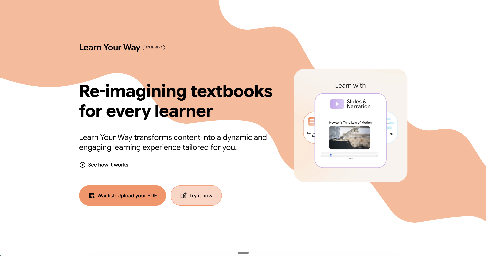

Non una lezione frontale: si fa, si prova, si sbaglia. L'IA si impara usandola.
Oggi più che mai serve: sull'IA siamo tutti, in parte, principianti.
Porterete i vostri casi reali, non esempi astratti. Più mettete, più portate a casa.
Non perché lo sa. Perché l'ha visto un miliardo di volte.
Calo della fatica
≠
spegnere il cervello.
Le sue domande ti costringono a pensare, non a delegare.
Ti mette alla prova come farebbe un collega
Trova i punti deboli del tuo ragionamento
Ti mostra l'altra prospettiva
Scopre i tuoi punti ciechi
Chi usa l'IA in modo passivo perde progressivamente pensiero critico.
